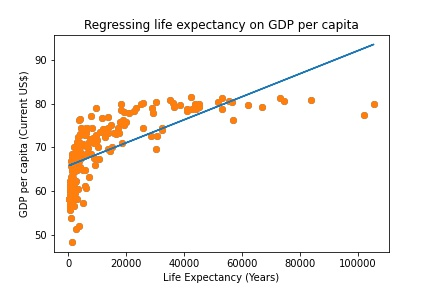
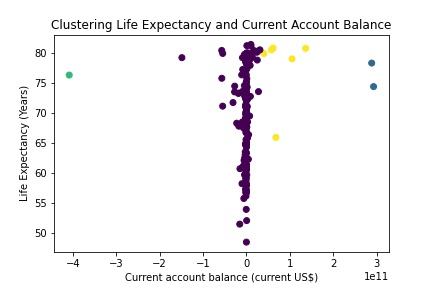

The first chart tracks global renewable electricty generation over time.
My second chart shows changes in forest area over time for 5 countries.
This chart shows how total outstanding credit for all members of the IMF has changed from 1984-2022.
This chart shows how total outstanding credit as a proportion of global GDP has changed from 1984-2022.
The riskiest year is 1985 as it has the highest credit outstanding value as a proportion of global GDP.
Here is my first week 3 chart which shows how the Dow Jones Industrial Average, S&P 500 and the Nasdaq have changed over time (measured in $) as represented using one visualisation per index in a column format.
The second visualisation uses the dimension of colour which was chosen as it displays the data in a more efficient and comparable manner.
This visualisation was created by scraping a table from a website titled indexmundi which had a table on the World Bank estimates for GINI indexes in Europe. I chose this site as it had a table that was scrapable.
Here is the link to my week 4 Google Colab notebook.
This graphic displays an interactive map of Africa.
This choropleth overlays population data for each country on the previous map.
Alessio Terzi said that inequality in developed economies is rising so I will look at how this has changed in the UK and US over time.
The US graph strongly supports this statement as the income disparity between the top 10% and bottom 50% is increasing while the UK graph supports the statement but with less clear evidence. Since 2015 in the UK the top 10% income share has remained relatively stable.
Hypothesis: Using supervised machine learning run a regression of life expectancy on GDP per capita to predict relationship. I expect a postive relationship.
Here is the Colab link. The results appear to confirm this positive relationship.
Hypothesis: Using unsupervised machine learning, countries can be clustered into 4 groups based on their current account balance and life expectancy. I expect the clusters to show that life expectancy does not depend on a country's current account balance.
Here is the Colab link. The results show that current account balance has no significant relationship with life expectancy.